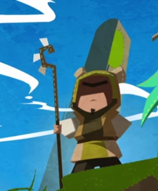

Au sein du Conseil, Yugo et Adamaï symbolisaient le courage et
l'esprit d'Aventure et, à chacune de leur incarnation, ils
étaient nommés Grands Protecteurs Eliatropes. Il est aussi le
Roi des Eliatropes, succédant à Chibi.
Chibi
Au sein du Conseil, Chibi et Grougaloragran maitrisaient la
connaissance et la science. Chibi était le Roi des Eliatropes,
il désigna Yugo pour lui succéder en tant que Roi.
Qilby
Il est le frère jumeau de la Dragonne Shinonomé. Au sein du
Conseil, Qilby et Shinonomé étaient les Gardiens de l'Histoire
et de la Mémoire des Âges. La Médecine était leur Don. Ensemble,
ils éradiquèrent de nombreuses maladies.

Glip
Au sein du Conseil, Glip et Baltazar avaient en charge
l'enseignement de la connaissance et l'éducation. Leur
bienveillance guidait les nouvelles générations à se dépasser.
Mina
Au sein du Conseil, Mina et Phaéris entretenaient la
spiritualité de leur peuple, et résolvaient les conflits.
Nora
À chacune de leurs nombreuses vies, Nora et Efrim incarnaient
l'innocence et la joie de vivre, ce qui en faisait des êtres
aimés par les autres Eliatropes, et particulièrement proches de
la Déesse.